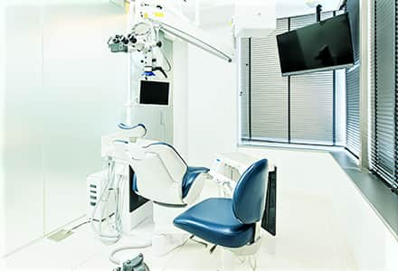
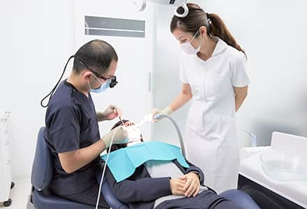
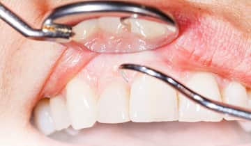
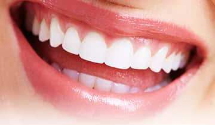
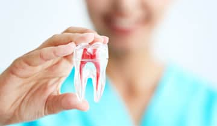
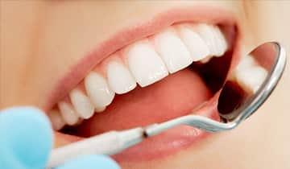
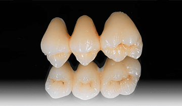
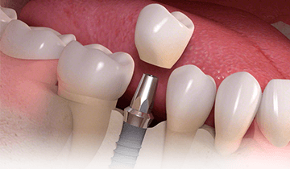
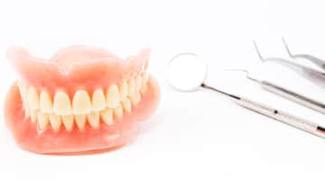
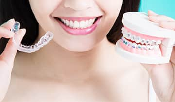

健康寿命を考えた、包括的な診療一覧

生涯、幸せで豊かな生活を健康体で過ごすために
自分の歯で噛み続けることが、健康寿命を延ばすためにとても重要であることをご存じでしょうか？
噛むことで、脳の機能が活性化され認知症予防や転倒などケガのリスク軽減につながります。また、よく噛むことは食欲抑制にもなり、肥満や生活習慣病の予防にもなるのです。1本の歯だけではなく、口腔内環境全体を整え“きちんと噛めるお口”を永く維持することで、結果的に身体全体の健康につながっていきます。さらに、自分でしっかりと噛んで食事をすることは、満足感や充実感を得ることができ、幸せな生活を過ごすうえでとても重要なことなのです。

当院では、患者様のお口の健康を守り、生涯豊かな生活を送れるよう、1本の歯だけを診るのではなくお口全体を考えた包括的診療を行っています。当院の院長玉木が日本歯周病学会専門医・指導医だからこそできる、歯と歯肉の関係性を考えた上での永く噛めるための治療、健康的でバランスの良い綺麗なお口を実現するための治療。さらに、各プロフェッショナルと連携しているからこそできる、本当に頼れる専門的な正しい治療をご提案いたします。また、治療後の予防処置も徹底的に行い、治療したお口を健康的に保つため、全力でサポートいたします。
患者様ひとり一人の「治したい」「健康になりたい」という想いに応えるため、日々研鑽し、患者様と真摯に向き合い続けることをお約束いたします。藤沢に住む皆様に“噛めることの幸せ”を実感していただけるよう、生涯にわたり患者様のお口の健康をお守りいたします。
包括的な観点での診療
歯周病治療・低侵襲レーザー治療

治療しているのに歯周病が
改善されず悩んでいませんか？
歯周組織の健康無くしてお口の中の長期的安定は望めないため、歯周病治療が全ての治療の基礎と考えています。他院では抜歯と診断されたケースについても、日本歯周病学会専門医・指導医が他科の専門医と連携しながら、可能な限り歯を残すよう治療を行っています。
歯周形成外科

各治療をする前に、歯周組織の状態を
整えることが重要です
歯周組織の環境整備が不十分のままインプラントやセラミック治療、入れ歯などの補綴治療を行うと、見た目や機能に悪影響を及ぼします。治療を長持ちさせるために、当院では日本歯周病学会専門医・指導医が補綴治療前に歯周組織の状態を整えるための治療を行っています。
根管治療

ルールに則って、
再発させない治療をご提供します
日本では再発が多い根管治療ですが､きちんとしたルールを守ることで再発しない治療は可能です｡そのためには､様々な機器・薬剤を使いこなし､根管内の無菌的状態を作ることが重要です｡当院では様々な環境の整備を行い､大学病院で根管治療を専門に行っている歯科医師ができる限り再発させない治療を行っています｡
予防処置

症状がでるころには、
歯周病や虫歯は進行しています
歯周病や虫歯は気づかないうちに病状が進んでしまうため、定期的なメインテナンスやお口の中のチェックが重要です。また、お口の中の環境は年齢とともに変化するため、最小限の治療で済むよう、治療後のメインテナンスも必要不可欠です。当院では、患者様のお口に合わせたオーダーメイドの予防処置をご提供します。
セラミック治療

銀歯は虫歯になるリスクが
高いと知っていますか？
銀歯が気になるからという理由でセラミックを選ぶのではなく、歯との接着性やプラーク（汚れ）の付きにくさ、生体親和性（金属アレルギーの心配がない）とう点から当院ではセラミック治療をおすすめしています。技術力に優れている歯科技工士と連携し、機能性と審美性を両立させた治療をご提供します。
インプラント治療

インプラント治療を他院で断られ、
あきらめていませんか？
インプラント治療は他の歯に負担をかけないため、他の治療法（ブリッジや入れ歯）と比較して処置がシンプルにできること、さらに治療期間や費用の面から考えて、とても優れた治療だと考えています。インプラントを長持ちさるために、日本歯周病学会専門医・指導医がインプラント周囲の硬組織・軟組織の環境を整えた上で的確な診査・診断を行い、治療を進めます。
精密義歯

入れ歯の違和感や痛み、
あきらめていませんか？
歯を失った際の治療方法はインプラントが全てではありません。きちんと設計した入れ歯（精密義歯）は違和感がなくしっかりと噛むことができ、健康長寿につながります。当院では、設計に徹底的にこだわり、技術力に優れている歯科技工士と連携し、精密義歯をご提供します。
矯正治療

気になる歯並び。まずはお口の状態を
整えることから始めましょう。
歯周病の治療をしないまま矯正治療を行うと、逆に口腔内環境を悪化させることにつながります。当院では、日本歯周病学会専門医・指導医である院長がしっかりと歯周組織の状態を整えたうえで、治療については、技術と経験が豊富な医師をご紹介します。
デンタルローンについて
当院では、保険外治療のお支払いで現金、カードでのお支払い、銀行振込だけではなく、アプラス（新生銀行グループ）のデンタルローン（分割払い）でのお支払いが可能です。デンタルローンはカードを使わずに、治療費を分割払いできるため、患者様の月々のお支払いの負担を減らすことができます。
詳しくは、当院のスタッフにご相談ください。